Co-created with Yutong (Yuyu) Li, Inna Krachun, Yi (Alyssa) Qu
Context
Set Brief · Collaborative
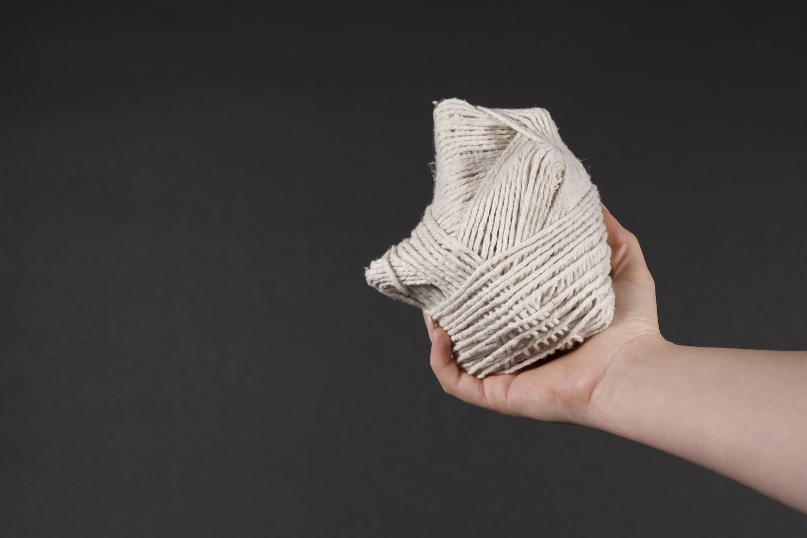
SCENTLINK — the human-side object, woven to be held.
Living with a dog changes what “going out” means. Before the keys and the door, there’s a small negotiation: making sure someone you care for can handle your absence.
SCENTLINK looks at the shared routines of separation between humans and dogs — an everyday interaction shaped by time, space, scent, anticipation, and human interpretation. Through behavioural observation and prototype-led enquiry, we mapped what dogs do when people leave, then asked how human reassurance behaviours and pet-tech “care scripts” might support, simplify, or unintentionally disrupt those rhythms.
Behaviour-firstPrototype as enquiryLow intrusionCare without overstimulationTangible support
01
Observe
We logged what dogs actually do in the minutes after a departure and before a reunion, at home. A pattern repeated: an early spike at the door, repetitive pacing, a drift toward scented anchors, and a slow settle into a “plateau”. As the return approached, the loop ran in reverse and anxiety resurged near the door.
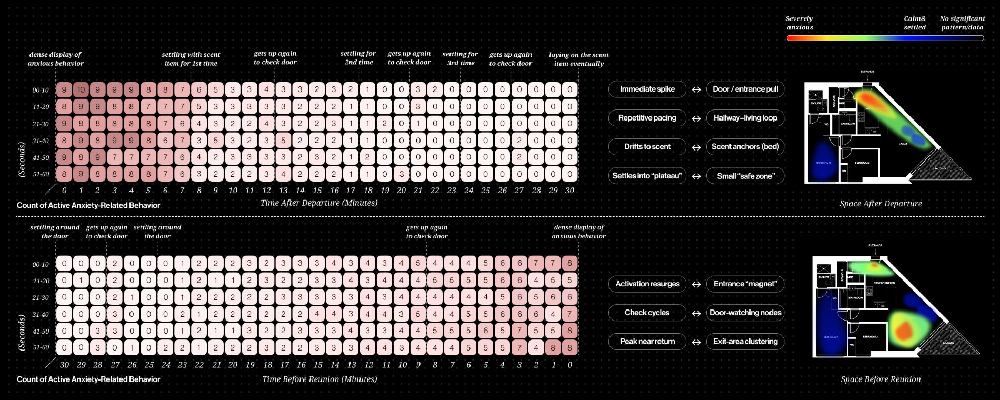
Active anxiety-related behaviour, mapped over time and across the space of the home.
02
Frame
To keep the making grounded, we turned the observations into a simple working model: separation is the narrow point where signals get out of sync, and both sides compensate in different ways. On the dog side, three variables kept repeating — scent, environment, anticipation. On the human side, two kept repeating — information and interaction.
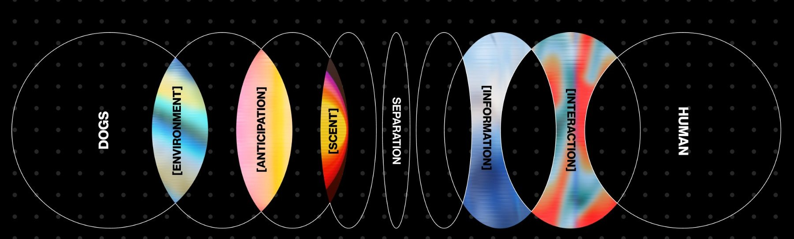
The separation loop — where dog-side and human-side signals fall out of sync.
03
Probe
The first prototype, Twin Objects, tested whether a dog and owner could stay connected through quiet physical gestures rather than cameras or screens. A leave-behind form for the dog and a handheld companion for the owner — paired in meaning, with a different physical language on each side.
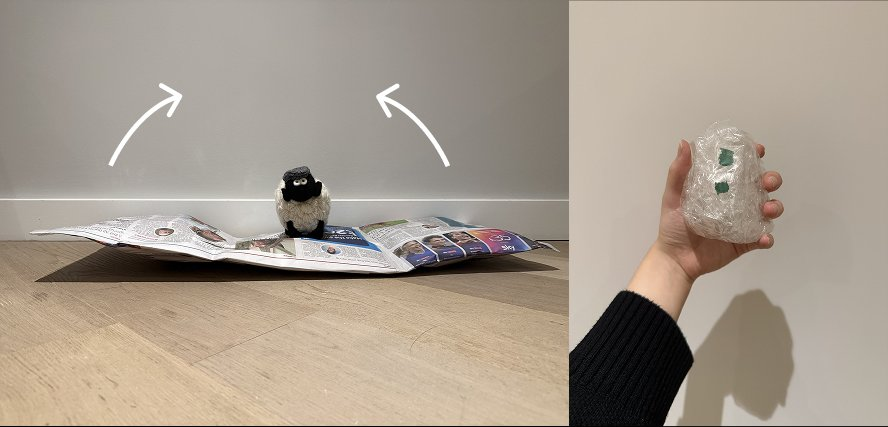
Twin Objects — an early test of shared presence between dog and owner.
04
Test
In-person think-alouds with dog owners surfaced the central risk. A moving, responsive object could read as a threat — “bed movement becomes a separation trigger”, “dogs may interpret motion as threat” — and repeated comfort could quietly train new anxiety. The conversations pointed toward predictability over novelty, and toward slow warmth, subtle scent, and familiar cues.
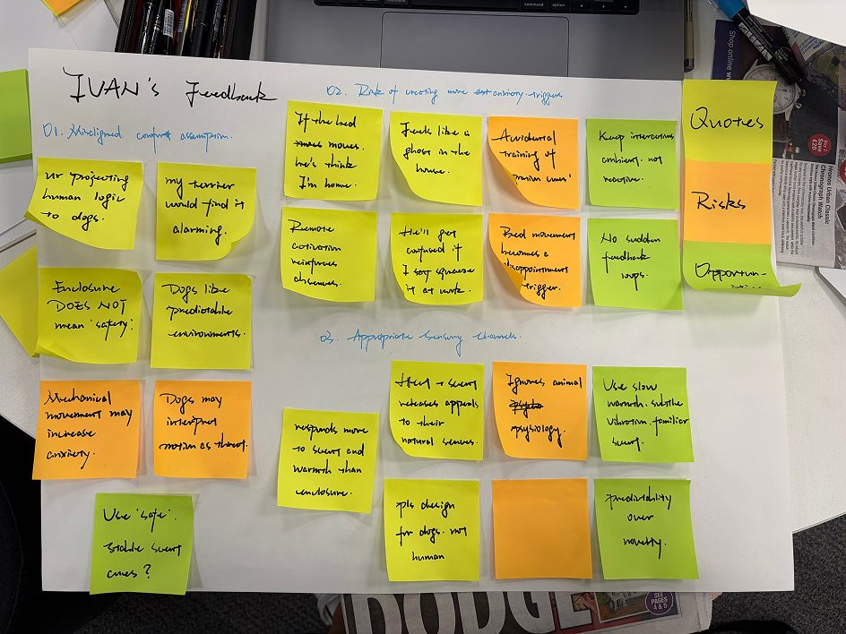
Feedback session — surfacing assumptions, risks, and the right sensory channels.
05
Refine
Feedback reshaped the dog-side object. The early fabric bed was a moving, responsive form, and it was the part that could misfire — so it became the focus of refinement. The work moved away from mechanical movement toward a calmer bed that holds and releases scent slowly, with scent shifting from a card to a refillable wax insert warmed by mild heat. The bed stays dog-first, and presence stays timed instead of constant.
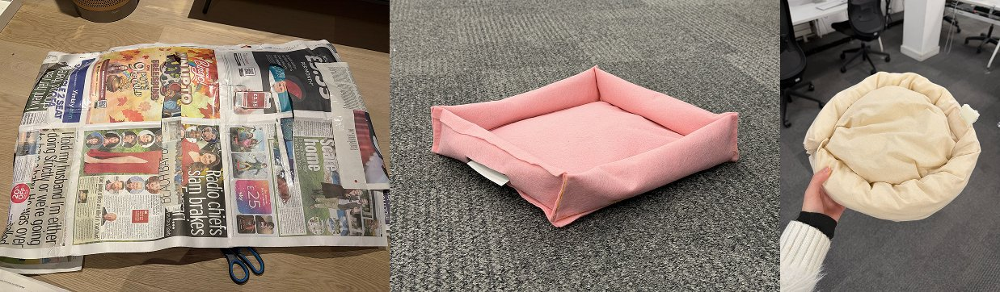
Refining the dog bed — away from movement, toward a calm, scent-holding form.
06
Resolve
The resolved direction keeps the system object-based and ambient. The dog keeps a calm, scented bed; the owner keeps a soft handheld companion; a small kit ties the two together. No screens, no check-ins — support that sits in the background of a home and waits to be noticed.
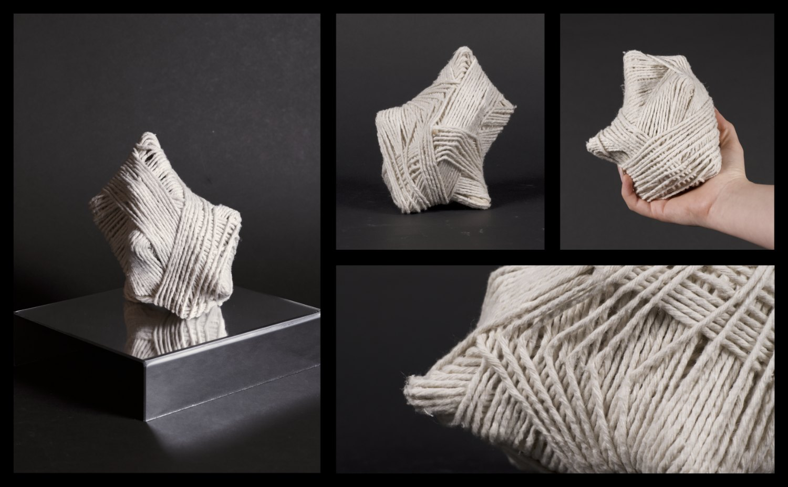
The human-side object — held, woven, kept close.
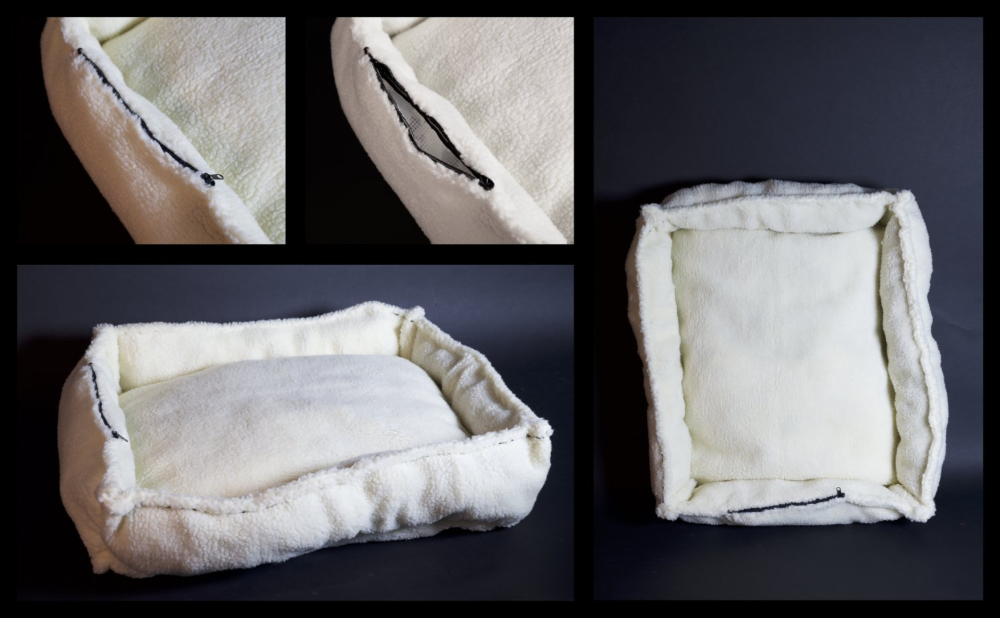
The dog bed — soft, openable, scent-holding.
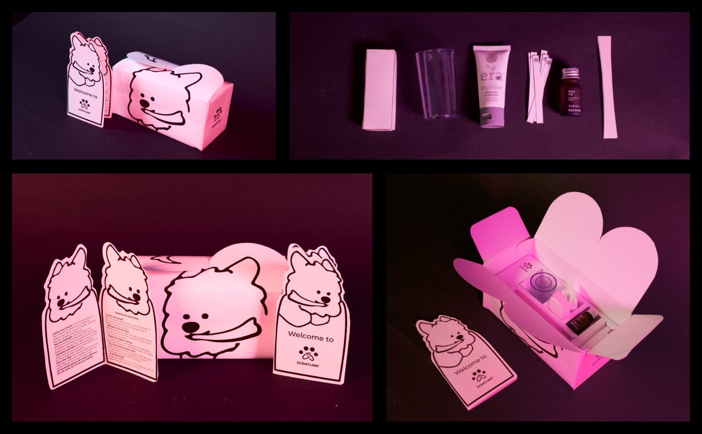
The kit — onboarding the ritual at home.
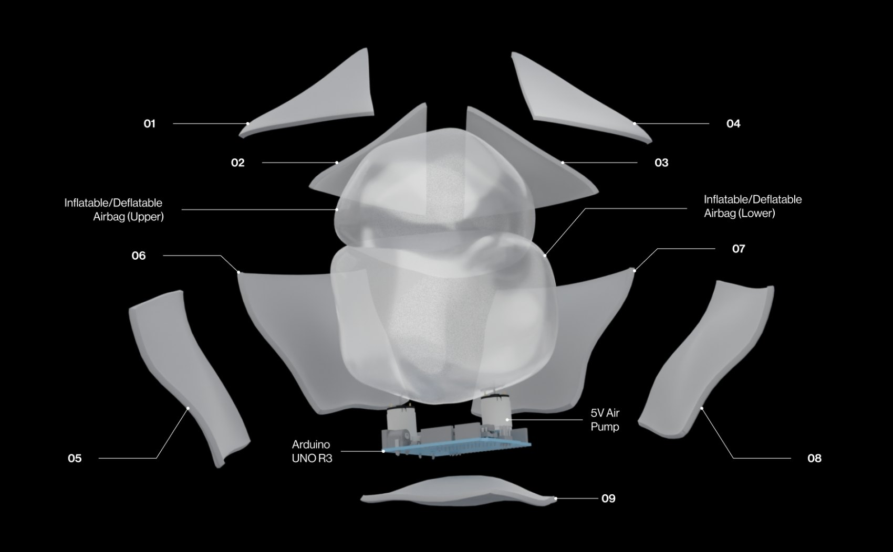
Inside the object — inflatable airbags, a small pump, and a microcontroller.
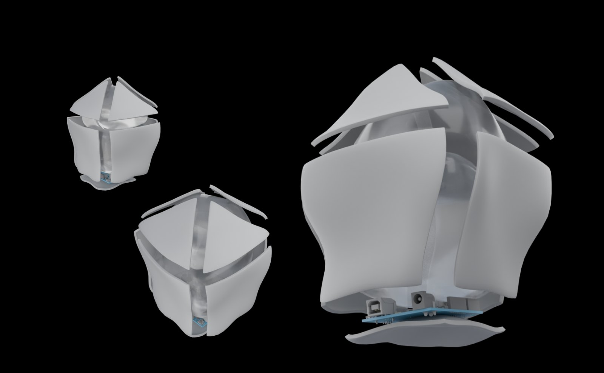
Resolved form studies.
Across the project, the question moved from connecting a dog and owner toward supporting a rhythm — quiet, scented presence that asks for less attention.